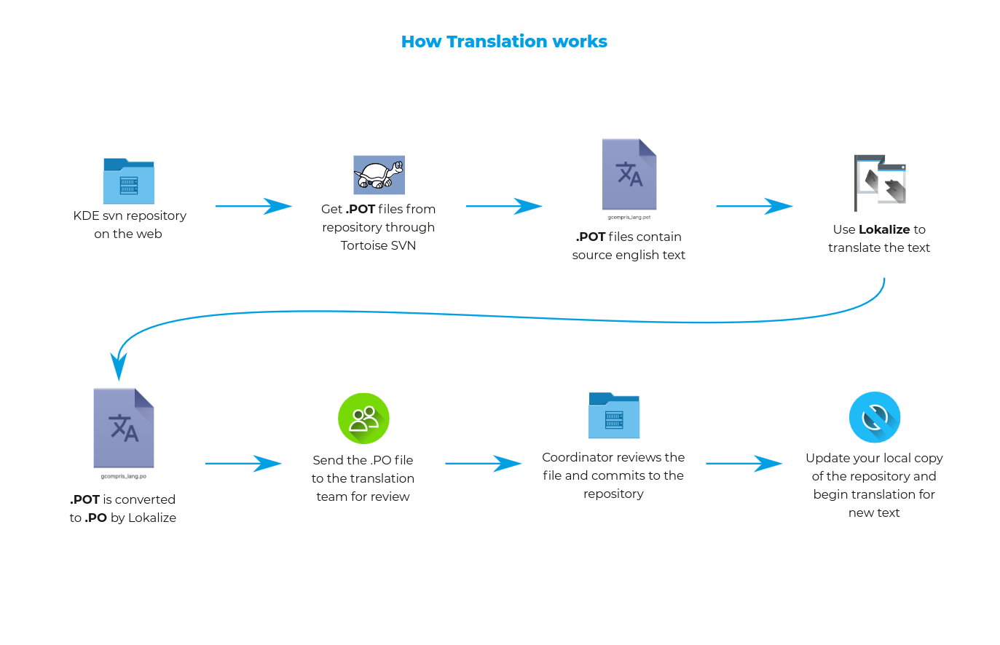
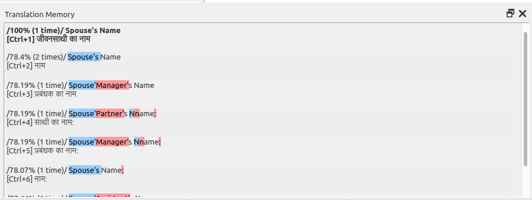

Asish Kumar
Student | 🇮🇳
Hindi Translation of Merkuro - Season of KDE 2024
In this blog, I will discuss my experience with season of KDE 2024.
I came to know about this program through a youtube video. I was given some pre tasks to complete by the mentors of the project which can be found at https://github.com/officialasishkumar/translation-kde-applications.
After completing the pre-tasks, I applied for the project and eventually got selected.
During my SoK period, I have to translate Merkuro, KDE connect, KTorrent and Cantor in Hindi. The project aims to translate all the words and sentences displayed in the application to the user in Hindi.
The first task was to translate Merkuro in Hindi. I used a software by KDE called Lokalize to translate the application. I did this translation with Akash Kumar. The overall translation went quite smoothly and we hardly faced any challenges.
The translation can be found at: https://invent.kde.org/akashkumar/sok-translations/-/tree/master/merkuro/messages?ref_type=heads
If you wish to get started using Lokalize, you can read this blog by Raghu Kamath.
In case you wish to get started translating a KDE application in your preferred language, you can checkout this workflow: 
Some of the best features of lokalize is Translation Memory. You can avoid translating same words by using this tool. 
I would like to thank my mentors, Benson Muite, Raghavendra Kamath and karunakar for providing guidance. I would also like to thank Aakarsh MJ for taking up the work to review Merkuro translation.